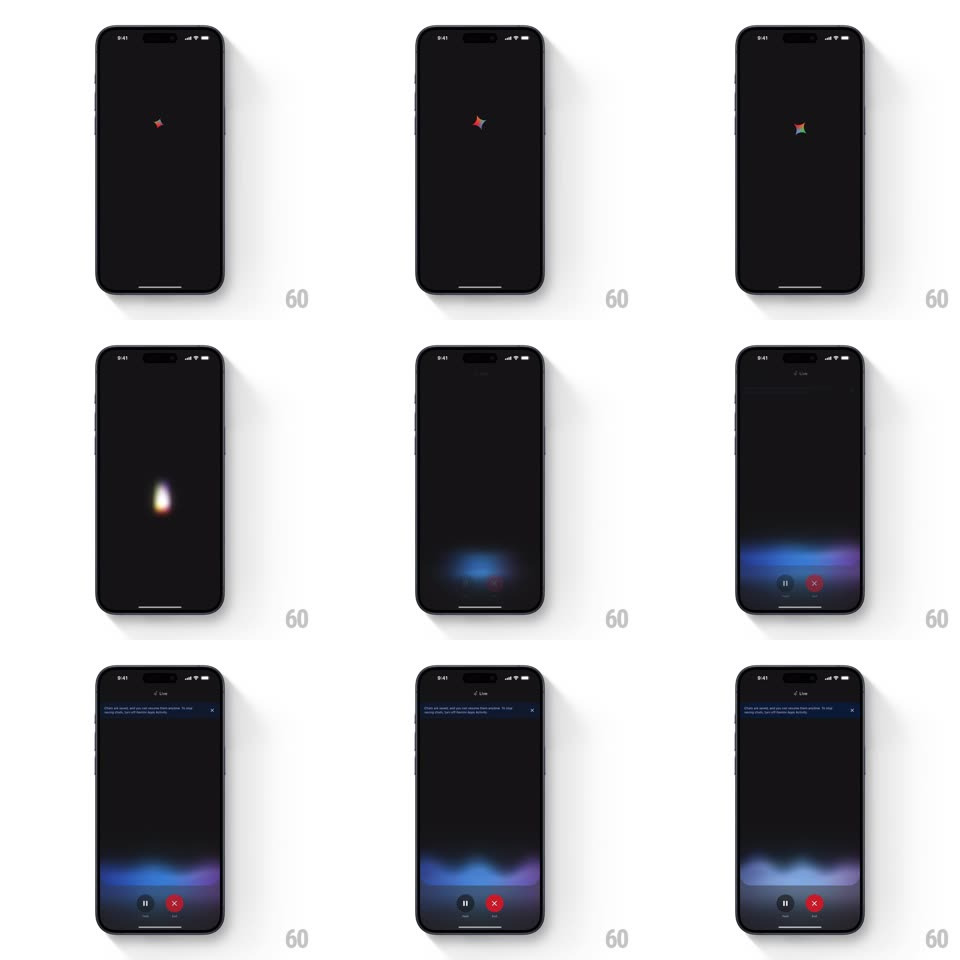

Media
Frame-by-frame

Rebuild this interaction 1:1: the Gemini logo drop - on a black screen, the four-point Gemini spark drops from the center, falls to the bottom, and morphs on landing into a fluid, glowing ambient voice waveform (blues and purples) that settles into the listening state with pause and close controls.

Rebuild this interaction 1:1: the Gemini logo drop - on a black screen, the four-point Gemini spark drops from the center, falls to the bottom, and morphs on landing into a fluid, glowing ambient voice waveform (blues and purples) that settles into the listening state with pause and close controls. ## Integration Integration: stack-agnostic spec - springs given as stiffness/damping, timed motions as duration + curve; map every value to your framework and animation library of choice. ## Scene Black full screen, "Live" label top-center, rounded pause and X buttons bottom. Idle is the ambient blue/purple waveform band hugging the bottom edge. The intro is the spark falling from center into that waveform. ## Motion spec Pattern: logo drop into state morph. - The spark fades in at screen center (opacity 0 -> 1, 200ms), holds a beat, then drops to the bottom edge on a gravity curve (accelerating translateY, ~500ms, ease-in). - On landing, the spark squishes and blooms outward horizontally (scaleY 0.6 -> scaleX 3, 250ms), its solid gradient dissolving into the soft blurred waveform band (crossfade 300ms). - The waveform breathes immediately: layered blobs undulate in phase-offset loops (translateY +/-8px and width +/-15%, 1.6s and 2.2s loops), colors cycling between blue and purple. - The "Live" label and pause/X controls fade in after the morph completes (250ms, 150ms stagger). ## Calibration - The drop is ballistic - accelerating, never linear. - The morph reads as one continuous object: spark -> squash -> wave, no cut. ## Reduced motion Spark crossfades directly into the waveform band (400ms), no fall. ## Don't miss - The landing squash is the moment the logo becomes the wave - exaggerate it. - The waveform glow bleeds onto the black background (soft outer blur, ~40px).